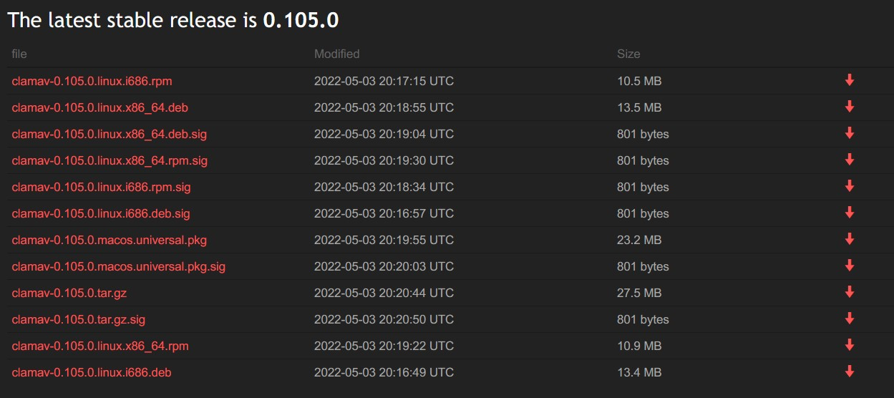

使用 ClamAV 對 Linux 系統進行掃毒
Contents
前言
這次主要是有放了一千年的老舊服務 VM 疑似被攻擊/入侵的疑慮，才找工具來掃看看~ 一開始是用 開源系統安全稽核工具：Lynis ，但使用後發現 Lynis 比較像是安全稽核，沒有掃描惡意程式的功能。
▲ Lynis 安全稽核會根據風險歸類 Warning 或者 Suggestion。
▲ 會想說用 ClamAV 掃看看有沒有被植入惡意病毒，就是因為看到 Malware scanner 欄位本來是打 X 的狀態。根據官方 HRDN-7230 - Presence malware scanner 才發現 ClamAV。
ClamAV 安裝
ClamAV 安裝非常簡單，官方下載頁面提供各式 Linux distro package，以我們 CentOS 7 來說直接下載對映 platform 的 .rpm，透過 rpm -i <PATH> 安裝即可。

▲ ClamAV 官方下載頁面。
▲ 2.1 Packages 有說明各個 file 預設在什麼地方。Google 好久不知道該把 CVD 放哪 = =
(Optional) ClamAV user 建立
2.7 Add a service user account 如果你想使用 freshclam 來更新 CVD (ClamAV Virus Database)，或者 clamd 來把 ClamAV 變成系統 daemond 的話就必須幫 ClamAV 建立專屬使用者/家目錄。但我們這次只想使用 CLI 來掃描一下系統目錄而已，因此不需要。
|
|
|
|
(Optional) ClamAV 設定檔
3.1 Configuration ClamAV 提供生成 config 的功能。
|
|
實際上如果用不到這些，可以不用生成。注意! 如果要使用 freshclam 來幫我們自動更新 CVD 病毒碼的話必須修改生成出來的預設 conf (防呆機制)
更新 CVD 病毒碼資料庫
Virus Databases 官方並沒有提供手動安裝 CVD 的選項，即使在沒有外網環境的情況下還是推薦採用 private local mirror 來處理，但我們只要跑這一次啊!! 這麼麻煩 duck 不必~
|
|
▲ 手動下載這三個 .cvd 放在 /usr/local/share/clamav/ 底下即可。
要確認是否有最新版本，可以使用 dig +noall +answer current.cvd.clamav.net TXT 來查詢 DNS TXT record 得知。
使用 clamscan --version 可以顯示 ClamAV 主程式 / CVD 病毒碼 / 病毒碼日期
掃描指定目錄
|
|
▲ -r 代表遞迴，-o 代表顯示錯誤/被感染的檔案就好。
▲ 掃描結果 (Summary)。
參考資料
Author 老柯
LastMod 2022-07-18